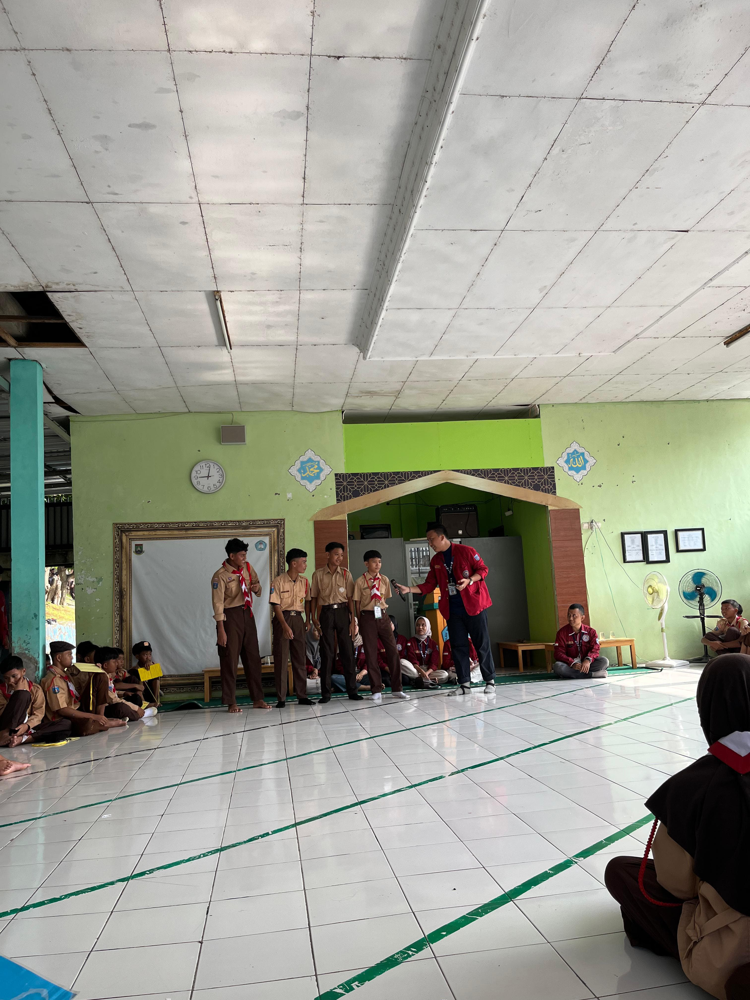
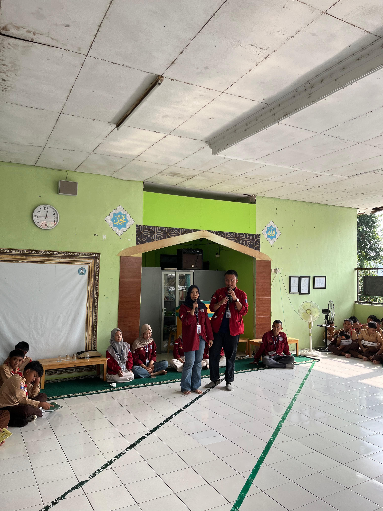
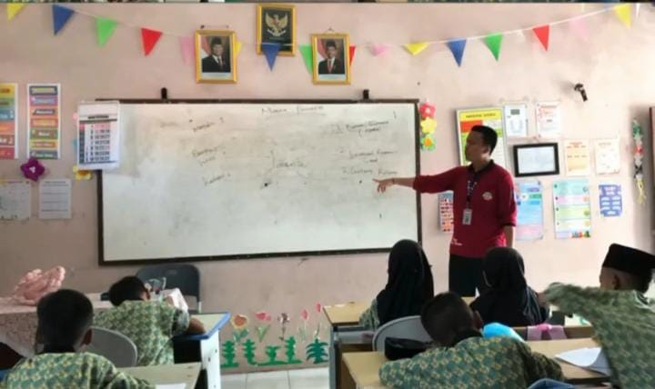

Program Kerja Bidang Hukum & Penyuluhan

Hukum & Penyuluhan
Pendidikan & Keterampilan
Kamis, 17 Juli 2025
Pengenalan Ekstrakurikuler SMPN 10
Membantu pengenalan kegiatan ekstrakurikuler kepada siswa baru SMPN 10 Kota Cilegon.
Kegiatan:
- Presentasi berbagai ekskul yang tersedia
- Pertunjukan dari masing-masing ekskul
- Bincang santai dengan anggota ekskul
- Pendaftaran minat siswa
- Pramuka
- PMR
- Paskibra
- Paduan Suara
- Tari Tradisional
- Futsal
- Klub Sains dan Teknologi
- Memberikan wawasan awal tentang pilihan ekskul
- Membantu siswa menemukan minat dan bakat
- Waktu terbatas (1 jam) untuk penyampaian mendalam
- Potensi kurangnya minat jika penyampaian kurang menarik

Hukum & Penyuluhan
Kesehatan
Kamis, 17 Juli 2025
Penyuluhan Kenakalan Remaja & Narkoba
Memberikan pemahaman tentang bahaya kenakalan remaja dan penyalahgunaan narkoba.
Materi Utama:
- Bahaya kenakalan remaja dalam kehidupan sehari-hari
- Pengenalan obat-obatan mengandung narkoba
- Jenis-jenis narkotika dan efeknya
- Dampak hukum penyalahgunaan narkoba
- Strategi penolakan terhadap narkoba
- Presentasi interaktif
- Pemutaran video edukasi
- Diskusi kelompok
- Studi kasus nyata
- Simulasi penolakan narkoba
- Memberikan pemahaman bahaya narkoba sejak dini
- Meningkatkan kesadaran lingkungan pergaulan sehat
- Topik berat bisa membuat siswa tidak nyaman
- Penyampaian teoretis berpotensi membosankan

Hukum & Penyuluhan
Pendidikan & Keterampilan
Jumat, 18 Juli 2025
Mengajar Pancasila di SD
Menanamkan nilai Pancasila dan tata krama dalam kehidupan sehari-hari kepada siswa SD.
Nilai yang Diajarkan:
- Sila 1: Berdoa, toleransi beragama
- Sila 2: Saling menghargai, gotong royong
- Sila 3: Cinta tanah air, persatuan
- Sila 4: Musyawarah, demokrasi
- Sila 5: Keadilan sosial
- 5S (Senyum, Salam, Sapa, Sopan, Santun)
- Berbicara dengan sopan
- Menghargai orang lain
- Kejujuran dan menepati janji
- Partisipasi dalam kegiatan masyarakat
- Menanamkan nilai moral dan kebangsaan sejak dini
- Pembelajaran kontekstual melalui kegiatan nyata
- Rentang perhatian anak SD yang terbatas
- Kebutuhan pendekatan kreatif agar tidak membosankan
- Nilai abstrak sulit dipahami tanpa contoh konkret

Pendidikan
Karakter
Senin, 21 Juli 2025
Ngajar PPKN - Pancasila
Pembelajaran interaktif tentang penerapan Pancasila di SDN Pringori.
Lokasi: SDN Pringori (Kelas 5)
Metode Pembelajaran:
Evaluasi Kegiatan:
- Diskusi kelompok interaktif
- Studi kasus kehidupan sehari-hari
- Permainan peran (role play)
1
Ketuhanan YME
2
Kemanusiaan yang adil dan beradab
3
Persatuan Indonesia
4
Kerakyatan yang dipimpin oleh hikmat kebijaksanaan
5
Keadilan sosial bagi seluruh rakyat Indonesia
Kelebihan
- Membentuk pribadi jujur dan bertanggung jawab
- Menjadi pedoman bersikap sehari-hari
- Meningkatkan toleransi dan nasionalisme
Kekurangan
- Pengaruh lingkungan vs nilai Pancasila
- Bertentangan dengan budaya populer/media sosial

Pendidikan
Kewarganegaraan
Jumat, 25 Juli 2025
Ngajar PPKN - Sistem Pemerintahan
Pembelajaran sistem pemerintahan Indonesia di SMPN 10 Cilegon.
Lokasi: SMPN 10 Cilegon (Kelas 9A)
Metode Pembelajaran:
Evaluasi Kegiatan:
- Ceramah interaktif
- Diskusi kelompok
- Simulasi pemerintahan
- Sesi tanya jawab
Sistem Presidensial Indonesia
- Presiden sebagai kepala negara & pemerintahan
- Pemilu langsung presiden/wakil presiden
- Menteri bertanggung jawab ke presiden
Perbandingan Sistem:
- Parlementer: Kepala negara ≠ kepala pemerintahan
- Semi-Parlementer: Ciri campuran
Kelebihan
- Memahami struktur pemerintahan Indonesia
- Meningkatkan kesadaran hak/kewajiban warga negara
- Memupuk rasa cinta tanah air
Kekurangan
- Beberapa siswa pasif dalam diskusi
- Materi terasa berat bagi yang belum terbiasa